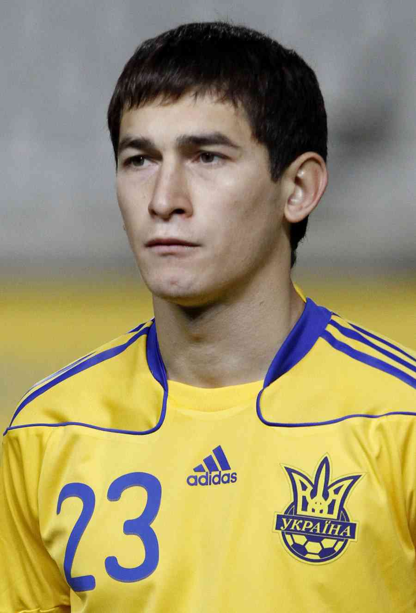

Андрій Пятов
- Повне ім'я:Андрій Валерійович Пятов
- Народження:28 червня 1984(39 років) Кіровоград, Українська РСР, СРСР
- Зріст:190 см
- Громадянство:Україна
- Позиці:воротара
Руслан Малиновський
- Повне ім'я:Руслан Володимирович Маліновський
- Народження:4 травня 1993 (30 років)Житомир, Україна
- Зріст:181 см
- Громадянство: Україна
- Позиці:атакувальний півзахисник
Микола Матвієнко
- Повне ім'я:Микола Олександрович Матвієнко
- Народження:2 травня 1996 (27 років)Саки, АР Крим, Україна
- Зріст:182 см
- Громадянство:Україна
- Позиці:центральний захисник,лівий захисник, правий захисник
Олександр Зінченко
- Повне ім'я:Олександр Володимирович Зінченко
- Народження:15 грудня 1996 (26 років)Радомишль, Житомирська область, Україна
- Зріст:175 см
- Громадянство: Україна
- Позиці:атакувальний півзахисник, лівий захисник,центральний півзахисник
Олександр Караваєв
- Повне ім'я:Олександр Олександрович Караваєв
- Народження:2 червня 1992 (31 рік)Херсон, Україна
- Зріст:175 см
- Громадянство: Україна
- Позиці:правий захисник
Євген Коноплянка
- Повне ім'я:Євген Олегович Коноплянка
- Народження:29 вересня 1989[1] (33 роки)Кіровоград, Українська РСР, СРСР
- Зріст:178 см
- Громадянство: Україна
- Позиці:лівий вінгерк
Віталій Миколенко
- Повне ім'я:Віталій Сергійович Миколенко
- Народження:29 травня 1999 (24 роки)Черкаси, Україна
- Зріст:180 см
- Громадянство: Україна
- Позиці:лівий захисник

Тарас Степаненко
- Повне ім'я:Тарас Миколайович Степаненко
- Народження:8 серпня 1989[1][2] (33 роки)Велика Новосілка, Донецька область, Українська РСР, СРСР
- Зріст:181 см
- Громадянство: Україна
- Позиці:опорний півзахисник
Роман Яремчук
- Повне ім'я:Роман Олегович Яремчук
- Народження:27 листопада 1995 (27 років)Львів, Україна
- Зріст:191 см
- Громадянство: Україна
- Позиці:центральний нападник